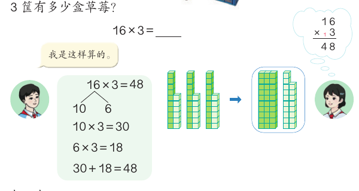
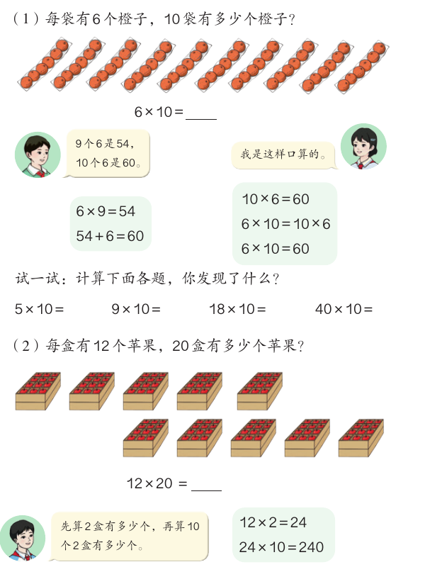
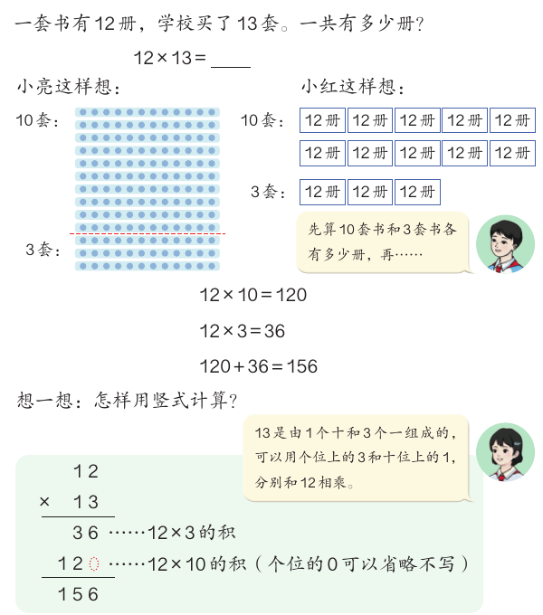
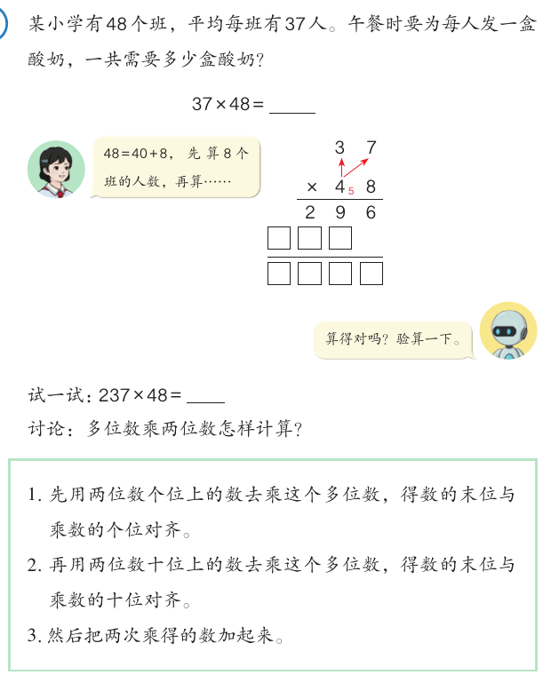
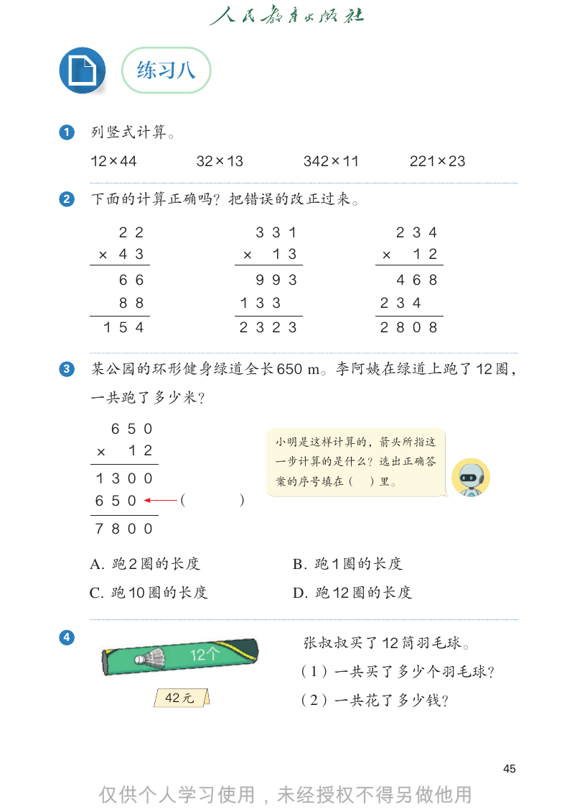

口算乘法与笔算乘法
3 筐草莓、13 套书、48 个班的酸奶，都要用乘法算。这一课先学口算，再学两位数乘两位数的竖式，并弄清竖式里每一行算的是什么。
学完本课，你能够：
- 把两位数拆成整十数和一位数，口算两位数乘一位数。
- 口算一个数乘 10、乘整十数，例如 12 × 20。
- 说出 12 × 13 为什么等于 12 × 10 加 12 × 3。
- 按教材的三个步骤，用竖式计算两位数、三位数乘两位数。
- 说出竖式里每一次乘得的数表示什么，并能找出竖式里的错误。
01口算：拆开算，再合起来
先说结论：口算 16 × 3，可以把 16 拆成 10 和 6。先算 10 × 3，再算 6 × 3，最后把两个积加起来。
教材的例 1：每筐有 16 盒草莓，3 筐有多少盒草莓？列式是 16 × 3。

小方块图说明了道理。3 个 16 里，有 3 根“十”和 3 堆“6 个一”。3 根十是 30，3 堆 6 是 18，合起来是 48。
按教材第 39 页的小方块图画。题目来自例 1、“做一做”和练习七。
02口算：乘整十数
先说结论：一个数乘 10，就是求 10 个这个数是多少。乘几十，可以先乘几，再乘 10。

一种想法：9 个 6 是 54，10 个 6 是 54 + 6 = 60。另一种想法：6 × 10 = 10 × 6 = 60。
每盒 12 个苹果，20 盒。先算 2 盒有多少个，再算 10 个 2 盒有多少个。
教材让你算一算 5 × 10、9 × 10、18 × 10、40 × 10，看看发现了什么。
按教材第 40 页例 2 的想法画。题目来自例 2、“试一试”和“做一做”。
03笔算：12 × 13 的两种想法
先说结论：13 是由 1 个十和 3 个一组成的。所以 12 × 13 就是 12 × 10 加 12 × 3。竖式也是这样算的。
教材的笔算例 1：一套书有 12 册，学校买了 13 套。一共有多少册？

每行 12 个点，一共 13 行。沿虚线把 13 行分成 10 行和 3 行。
10 套是 12 × 10 = 120 册，3 套是 12 × 3 = 36 册，合起来 120 + 36 = 156 册。
按教材第 43 页小亮的点子图画。“每行也切开”是补充的看法，切成四块后加起来，积不变。
04竖式怎样写
先说结论：用竖式算多位数乘两位数，分三步。先用个位上的数乘，再用十位上的数乘，最后把两次乘得的数加起来。最要紧的是“对齐”。
回到 12 × 13 的竖式。第一行 36 是 12 × 3 的积。第二行写 12，它是 12 × 10 的积，个位的 0 可以省略不写。所以第二行的 2 要和十位对齐。最后 36 + 120 = 156。
教材的例 2：某小学有 48 个班，平均每班有 37 人。每人发一盒酸奶，一共需要多少盒？列式是 37 × 48。48 = 40 + 8，先算 8 个班的人数，再算 40 个班的人数。

- 先用两位数个位上的数去乘这个多位数，得数的末位与乘数的个位对齐。
- 再用两位数十位上的数去乘这个多位数，得数的末位与乘数的十位对齐。
- 然后把两次乘得的数加起来。
竖式写法按教材第 43–44 页。进位的小数字没有画出来，请你自己在本子上写。
05练习：找错和解决问题
先说结论：看懂竖式里每一行表示什么，就能找出错误，也能解决生活中的问题。

- 找错（练习八第 2 题）：先看第二次乘得的数是不是和十位对齐。再看它是不是等于“多位数 × 十位上的数”。
- 每一行的意思（练习八第 3 题）：绿道全长 650 m，李阿姨跑了 12 圈。竖式 650 × 12 里，第一行算的是 2 圈，箭头那一行算的是几圈？
- 生活中的乘法：漏水的水龙头 1 分钟滴水 5 g，1 小时、1 天各滴多少克（练习七第 6 题）；每套明信片售价 16 元，卖出 156 套一共卖了多少钱（练习八第 8 题）。
06自测与速记
速记表
| 要点 | 一句话 |
|---|---|
| 口算两位数乘一位数 | 拆成几十和几，分别乘，再相加：16 × 3 = 30 + 18 = 48 |
| 乘 10、乘整十数 | 10 个 6 是 60；12 × 20：先 12 × 2 = 24，再 24 × 10 = 240 |
| 笔算的道理 | 12 × 13 = 12 × 10 + 12 × 3 = 120 + 36 = 156 |
| 笔算三步 | 个位乘，末位对齐个位；十位乘，末位对齐十位；两次乘得的数相加 |
| 验算 | 交换乘数再算，或用计算器验算 |
相关课程
教材：人教版《数学》四年级上册第三单元“多位数乘两位数”第 39–47 页。标为“补充”的内容和模拟演示是课程作者的解释，不是教材原文。